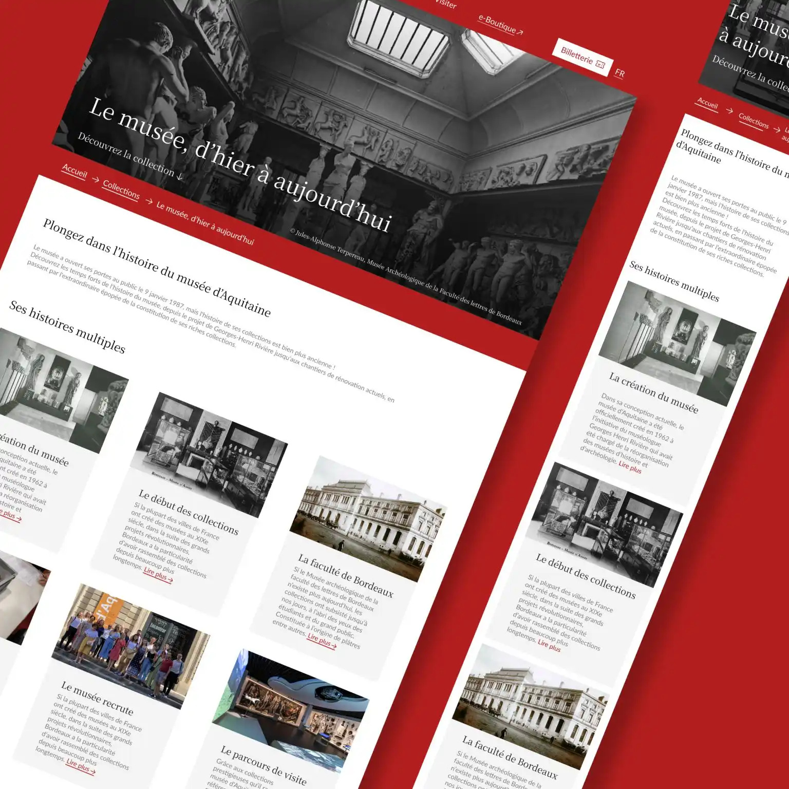
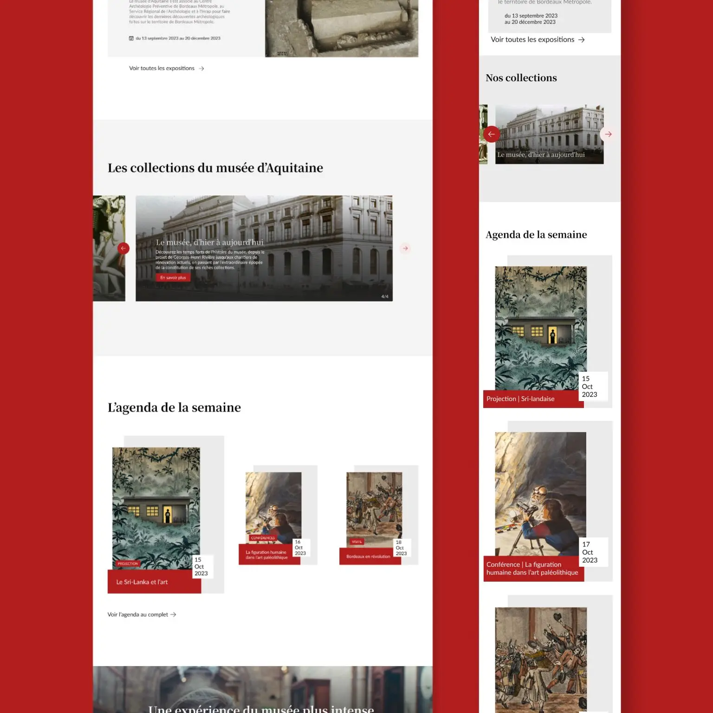
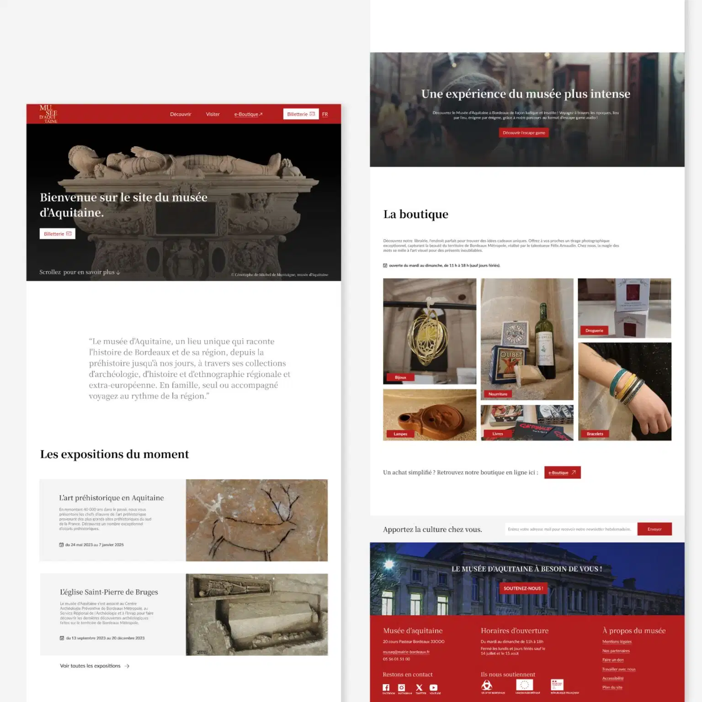

Site immersif
Pour un hackathon, réalisation d'un site sur le thème du numérique responsable.
C’est un projet réalisé dans le cadre de ma formation en MMI pour lequel nous étions 4. Nous avons designé et développé ce site en 2 semaines. Découvrez-en plus ↓



La 1ère semaine était consacrée au webdesign. Nous avons eu à choisir quels éléments et quelles dispositions reprendre ou ajouter. Nous avons utilisé l’outil de travail collaboratif figma notamment.
Nous avons codé le site la 2ème semaine et nous travaillions ensemble grâce à github. Il nous a fallu veiller à l’accessibilité du site↓.

Nous avons choisi de donner un côté “prestige” au site, adapté à un site pour un musée présentant de belles œuvres et une riche histoire. C’est pour cela que nous avons choisi une police serif pour les titres et une plus classique, sans serif pour les textes, pour sa modernité et son accessibilité.
Les couleurs ont également été choisies pour cela et nous avons voulu le site très aéré pour l’aspect esthétique.
Le site devait être accessible. Il fallait qu’il puisse être simple d’utilisation sur toute taille d’écran, particulièrement en version mobile. Mais également, le site se devait d’être inclusif, en respectant des normes d’accessibilités, d’expérience utilisateur et de référencement web.
Nos couleurs présentent ainsi de bons contrastes et nos images ont été optimisées pour être moins lourdes sans trop compromettre leur qualité.